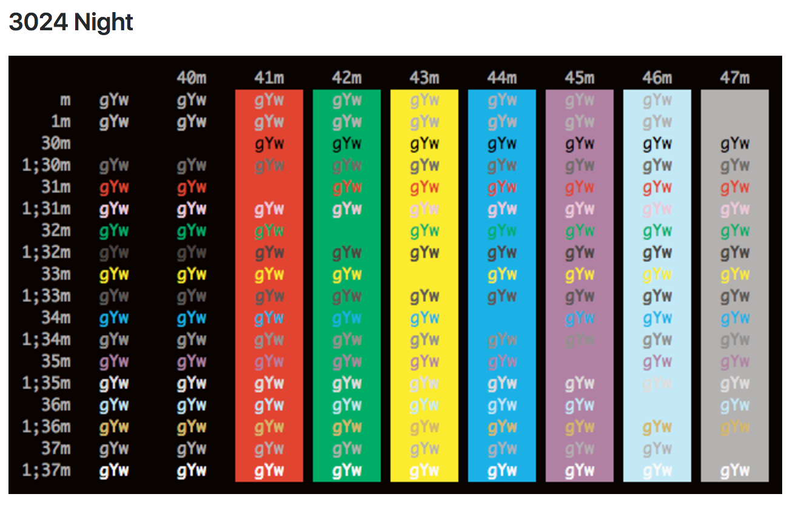

下载
请到 https://github.com/mbadolato/iTerm2-Color-Schemes 下载。
|
|
安装
To install:
- Launch iTerm 2. Get the latest version at iterm2.com
- Type CMD+i (⌘+i)
- Navigate to Colors tab
- Click on Color Presets
- Click on Import
- Select the .itermcolors file(s) of the scheme(s) you’d like to use
- Click on Color Presets and choose a color scheme
